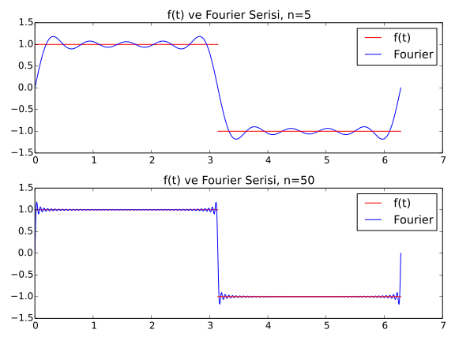

2.1. While Döngüleri
Kayıt Tarihi:
Son Güncelleme:
İlk öğreneceğimiz döngü çeşidi while döngüleridir. Bu döngüleri kullanabilmek için bool verilerine ihtiyacımız var. Matematik derslerindeki sembolik mantık konusundan aşina olduğunuz bu konuyu açıkladıktan sonra Fourier serileri ve Gauss dağılımı ile ilgili döngü örnekleri vereceğiz.
Anahtar Kelimeler: and · bool verisi · Fourier serisi · Gibbs olgusu · or · sonlu toplam · while döngüsüBool Verileri
Python'da değeri sadece True veya False, yani Doğru veya Yanlış olabilen özel bir veri tipi vardır, bu nesnelere bool (boolean) nesnesi denir. Bool nesneleri farklı yöntemlerle oluşturulabilir, en sık kullanılan yöntem mukayese yapmaktır. İki nesne arasında bir bağıntı oluşturup buun doğruluk değerini bool verisi olarak alabiliriz. Örneğin x < 2 bağıntısı 2'den küçük değişken değerleri için True, diğer durumlarda False olacaktır. Kullanabileceğimiz diğer bağıntılar ==, !=, <=, >= biçimindedir ve bunlar eşittir, eşit değildir, küçük eşittir, büyük eşittir anlamlarına sahiptir. Dikkat edin, = bir değişkene atama yaparken == bir bağıntı kurar!
>>> x = 5
>>>
>>> x < 2
False
>>> x > 0
True
>>> x != 5
False
>>> 2*x -1 >= 10
False
>>> x**2 - 5 == 20
True
Bool nesneleri and ve or bağlaçlarıyla birleştirilip yeni bool nesneleri oluşturulabilir. Bu bağlaçlar matematikte kullandığımız ve ile veya ($\boldsymbol{\wedge}$ ile $\boldsymbol{\vee}$) ile aynı şekilde çalışır. Yani and ile bağlanmış bool verilerinden en az biri False ise bu verinin değeri de False, aksi durumda True olur. Benzer şekilde or ile bağlanmış bool nesnelerinden en az birisi True ise nesne True, aksi durumda False değer döndürür. Ayrıca bir bool nesnesinin önüne not ifadesi bu nesnenin değerini tersine çevirir.
>>> from scipy import sqrt
>>>
>>> x = 2
>>> x >= 0 or x**2 != 2*x
True
>>> not x >= 0 or x**2 != 2*x
False
>>> x**2 - 2*x > 0 or sqrt(x - 1) == 0
False
>>> y = x**2 - 2*x -1
>>> sqrt(y).real <= 0 and sqrt(y).imag != 0
True
Son olarak bool nesneleri hakkında bir kaç teknik bilgi verelim. Aslında Python'da her nesnenin bir bool değeri vardır ve bu değere bool(nesne) komutuyla ulaşılabilir. Buradaki nesne kendisi bir bool verisi değil ise nesne sonucunun değeri hesaplanırken temel kural şöyledir. Sıfır sayıları (0 veya 0.0), boş string nesneleri ("" veya ''), boş list, tuple, dict gibi veriler (bunları daha sonra öğreneceğiz) False, diğer tüm nesneler True bool değerine sahiptir. Biz x or y veya x and y komutunu girdiğimizde Python aslında True veya False değerini döndürmez, arka planda x veya y nesnelerinden birini sonuç olarak döndürür, bu nesnenin de bool değeri hesaplanıp ekrana yazdırılır.
>>> bool(x)
True
>>> bool(x - 2)
False
>>> x or x + 1 or 5 or "python"
2
>>> x - 2 or 0 or 2*x - 4 or x + 1 or "python"
3
>>> x - 2 or 0 or 2*x - 4 or x**2 - 4 or "python"
'python'
>>> x - 2 or 0 or 2*x - 4 or x**2 - 4
0
>>> x and 2*x and x - 1 and "python"
'python'
>>> x and 2*x and x - 2 and "python"
0
Anlaşılacağı üzere or ile bağlanmış ifadelerin en az bir bileşeni True ise sonuç True olacağından ilk True değeri ile karşılaşılınca gerisi değerlendirilmez. Yani or ile bağlı ifadelerin değeri ilk karşılaşılan True nesnedir, True nesne yoksa değeri son nesnedir. and ile bağlı ifadelerde durum bunun tam tersidir. Son olarak şunu da ekleyelim, bir nesnenin bool(nesne) ile getirilen bool değeri cebirsel işlemlerse 0 ve 1 olarak değerlendirilir.
>>> bool(x) + 3
4
>>> 2*bool(x > 0) + 3
5
>>> bool(x - 2) + 10
10
Döngü Yapısı
İstatistik hesabında normal dağılımı tanımlamak için kullanılan ve Gauss Fonksiyonu olarak adlandırılan $$f(x)=\frac{1}{\sqrt{2\pi}s}\exp\left[{-\frac{1}{2}\left( \frac{x-m}{s} \right)^2}\right]$$ fonksiyonunu ele alalım, burada $m$ ve $s>0$ reel parametrelerdir. Amacımız $m=0$ ve $s=1$ seçip $x=-3, -2, -1, 0, 1, 2, 3$ için $f(x)$ değerlerini bir tablo halinde yazdırmaktır. Bunu aşağıdaki program yapabilir.
from math import sqrt, pi, exp
m = 0.0
s = 1.0
K = (1/(sqrt(2*pi)*s))
x=-3.0; f=K*exp(-(1.0/2)*((x-m)/s)**2); print "x=%2d f(x)=%g" % (x, f)
x=-2.0; f=K*exp(-(1.0/2)*((x-m)/s)**2); print "x=%2d f(x)=%g" % (x, f)
x=-1.0; f=K*exp(-(1.0/2)*((x-m)/s)**2); print "x=%2d f(x)=%g" % (x, f)
x=0.0; f=K*exp(-(1.0/2)*((x-m)/s)**2); print "x=%2d f(x)=%g" % (x, f)
x=1.0; f=K*exp(-(1.0/2)*((x-m)/s)**2); print "x=%2d f(x)=%g" % (x, f)
x=2.0; f=K*exp(-(1.0/2)*((x-m)/s)**2); print "x=%2d f(x)=%g" % (x, f)
x=3.0; f=K*exp(-(1.0/2)*((x-m)/s)**2); print "x=%2d f(x)=%g" % (x, f)
Yukarıdaki yazımdan fark ettiğiniz üzere Python'da komutlar farklı satırlar yerine, noktalı virgül ile ayrılmak şartıyla, aynı satırda da yazılabilir. Şimdi yukarıdaki programı çalıştırırsak aşağıdaki gibi bir çıktı alırız.
Terminal > python gauss1.py
x=-3 f(x)=0.00443185
x=-2 f(x)=0.053991
x=-1 f(x)=0.241971
x= 0 f(x)=0.398942
x= 1 f(x)=0.241971
x= 2 f(x)=0.053991
x= 3 f(x)=0.00443185
Bu çıktı tam istediğimiz gibi, fakat programın kodları üzerinde biraz durmamız gerekiyor. Buradaki sorun şu, aynı (veya benzer) komutlar bir çok defa tekrarlanıyor. Aynı işlemleri farklı değişken değerlerine defalarca uygulamak için bir döngü kullanabiliriz.
Python'da while döngüleri, belirli bir koşul sağlandığı sürece bir işlemi tekrarlamaya yarar. Buradaki koşul bir bool verisi ile belirtilir, dolayısı ile bu bool nesnesinin değeri True olduğu sürece belirtilen bir işlem tekrarlanır. Bu döngünün söz dizimini aşağıdaki örnek üzerinde gözlemleyelim.
from math import sqrt, pi, exp
m = 0.0
s = 1.0
K = (1/(sqrt(2*pi)*s))
x = -3
while x < 4:
f = K*exp(-(1.0/2)*((x - m)/s)**2)
print "x=%2d f(x)=%g" % (x, f)
x = x + 1
Bu program da yukarıdaki çıktının aynısını üretir fakat çok daha kompakt ve modern bir kod ile. Şimdi bu kodları açıklayalım, x = -3 satırına kadar önceki kodlar ile aynıdır. Bu satırda tanımladığımız x değişkenine kuracağımız döngü için bir sayaç değişkeni deriz, aslında bu değişken bizim Gauss fonksiyonumuzun ana değişkenidir. Daha sonra bir sonraki satıra while kelimesini takip eden bir bool nesnesi ve hemen sonrasında iki nokta üst üste yazılıp alt satıra geçilir. Tekrarlanmasını istediğimiz işlemleri bir veya birkaç satırda belirtiriz fakat bu satırların while satırı ile aynı paragraf hizasında başlamaması gerekiyor. Tekrar işlemleri belirten satırların hepsi aynı hizada ama while satırından daha sağdan başlamalı. Yukarıdaki örnekte tekrarlanmasını istediğimiz işlemleri dört karakter boşluk (bir tab uzunluğu kadar) bıraktıktan sonra başlattık. Bu boşluk sayısının dört olması zorunlu değildir, istediğimiz uzunluğu seçebiliriz ama dört karakter seçimi Python'da bir gelenek olmuştur. Bir while döngüsünün amacı, altındaki kendinden farklı hizada bulunan tüm satırları (kendi ile aynı hizada bir satır görene kadar bütün satırları) belirtilen bool nesnesi True olduğu sürece tekrarlamaktır. Dolayısıyla sonsuz bir döngüye girmemek için bu satırlar içinde belirtilen bool nesnesini etkileyecek işlemler de yapmalıyız. Yukarıdaki örnekte döngüden önce x = -3 değişkenini tanımladık, daha sonra while döngüsünde x < 4 olduğu sürece bu x değişkenini kullanarak f değerini hesaplayıp yazdırmasını istedik. Döngü içinde bu yazım işleminden sonra x değişkeni değerini 1 arttırdık, döngünün sonraki adımına bu şekilde gitmezsek döngü aynı x değeri ile aynı f değerini yazdırır ve bunları tekrarlayarak hiç bir zaman durmazdı. Ama bu şekilde değişkeni her tekrarda arttırınca belirli sayıda tekrardan sonra x < 4 bool verisi False olacaktır ve döngü sona erecektir. Bundan sonra programımız döngüden sonraki kodlarla devam edecektir.
x = x + 1 ifadesine dikkat edelim. Bu ifade matematiksel olarak bir çelişki ise de Python dilinde sıklıkla kullanılan bir ifadedir. Python'da = ile bir değişkene değer atanırken önce eşitliğin sağ tarafındaki ifade hesaplanıp sonucu bellekte tutulur, daha sonra bu bellekteki değere eşitliğin solundaki isim atanır. Burada ele aldığımız örnekte önce x + 1 değeri hesaplanıp belleğe alınır, hali hazırda bellekte x adında bir değişkenin değeri vardı. Daha sonra bu yeni hesaplanan değere x ismi atanır, daha önceden bu isimle başka bir değer vardı ve bu yeni atamadan sonra bu ismin atıf verdiği eski değer bellekten silinir. Böyle işlemler Python döngüleri içinde sıklıkla yapıldığı için kısa yolları vardır, x = x + 1 ifadesi ile x += 1 ifadesi aynı atamayı yapar. Diğer cebirsel işlemler için de -=, *=, /=, **= kısaltmaları kullanılabilir. Dolayısıyla aşağıdaki program da yukarıdakilerle aynı çıktıyı verecektir.
from math import sqrt, pi, exp
m = 0.0
s = 1.0
K = (1/(sqrt(2*pi)*s))
x = -3
while x < 4:
f = K*exp(-(1.0/2)*((x - m)/s)**2)
print "x=%2d f(x)=%g" % (x, f)
x += 1
Sonlu Toplamlar
Bilimsel hesaplamalarda $\sum x_n$ biçiminde toplamlarla çok sık karşılaşırız, böyle sonlu toplamları hesaplarken döngüleri kullanırız. Uygun bir ilk terim tanımladıktan sonra kurulan döngünün her adımında toplamın bir terimi hesaplanıp ilk terime eklenir ve bu terimin değeri güncellenir. Ayrıca bir de sayaç değişkeni tanımlanıp toplam kaç adım hesaplanacaksa ona göre bir bool verisi oluşturulur. Örneğin $$ f(t)= \left\{ \begin{array}{ll} 1, & \quad 0 < t < T/2\\ 0, & \quad t = T/2\\ -1, & \quad T/2 < t < T \end{array} \right. $$ fonksiyonunun bir $t$ noktasındaki yaklaşık değerlerini $$ S(t;n) = \frac{4}{\pi}\sum_{i=1}^n\frac{1}{2i-1}\sin\left( \frac{2(2i-1)\pi t}{T} \right) $$ toplamı ile hesaplayabiliriz. Bu tip serilere literatürde Fourier serileri denir ve bu örnekteki $f(t)$ için $n\rightarrow\infty$ için $S(t;n)\rightarrow f(t)$ olduğu gösterilebilir, belirli şartları sağlamayan fonksiyonların Fourier serileri yakınsak olmayabilir. Bu tür serilerin elektronik mühendisliği, sinyal ve resim işleme, akustik, kuantum mekaniği gibi bir çokalanda kullanım alanı vardır. Buradaki toplamı aşağıdaki programda görülen döngü ile hesaplayabiliriz.
from math import sin, pi
t = pi/2
i = 1
n = 10000
T = 2*pi
s = 0
while i <= n:
terim = (1.0/(2*i - 1))*sin((2*(2*i - 1)*pi*t)/T)
s += terim
i += 1
toplam = (4/pi)*s
print "f(t)=%.16f (yaklasik hesap, n=%d)" % (toplam, n)
Bu programda $f(\pi/2)$ değerini hesaplamak için yukarıdaki seriyi $(0, 2\pi)$ aralığında 10.000 adım ile kullandık. Fonksiyon tanımından $f(\pi/2)=0$ olduğu görülüyor, bu hesaplama ile de yakın bir sonuç bulacağımızı umuyoruz. Programın çıktısı aşağıdaki gibi olur.
Terminal > python fourier1.py
f(t)=0.9999681690114585 (yaklasik hesap, n=10000)
Görüldüğü gibi sonuç gerçek değere yakın, adım sayısı arttırılarak daha da yakın sonuçlar elde etmeyi umabiliriz. Gerçekten $t=\pi/2$ noktasında böyle olacaktır ama süreksizlik noktaları olan $t=0$, $t=\pi$ ve $t=\pi/2$ noktalarına yakın noktalarda adım sayısını arttırmak çok işe yaramaz. Aşağıda verilen grafikte bu durumu gözlemleyebilirsiniz. Bu durum Fourier serilerinin doğasıyla alakalı bir durumdur ve literatürde Gibbs olgusu olarak adlandırılır.
1.3. Matematiksel Fonksiyonlar
Python ve Bilimsel Hesaplama
2.2. For Döngüleri